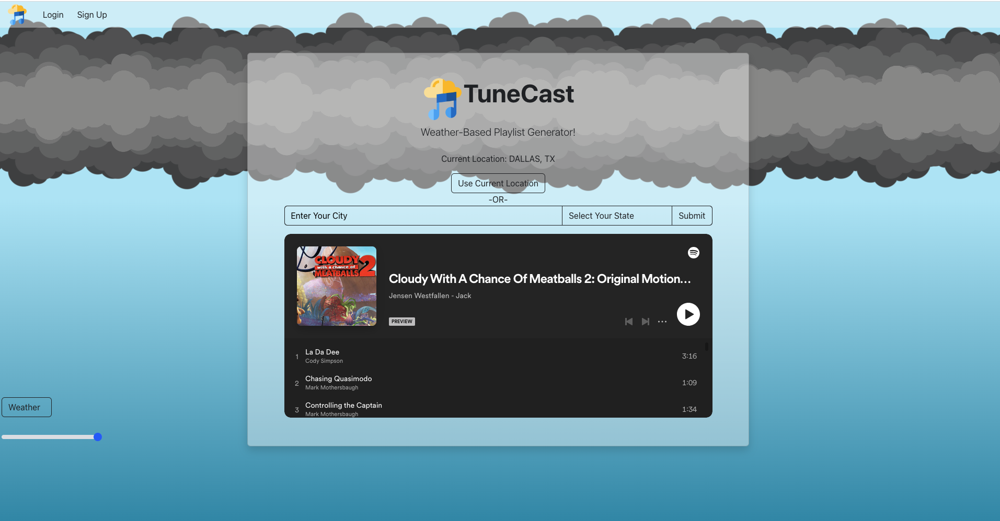
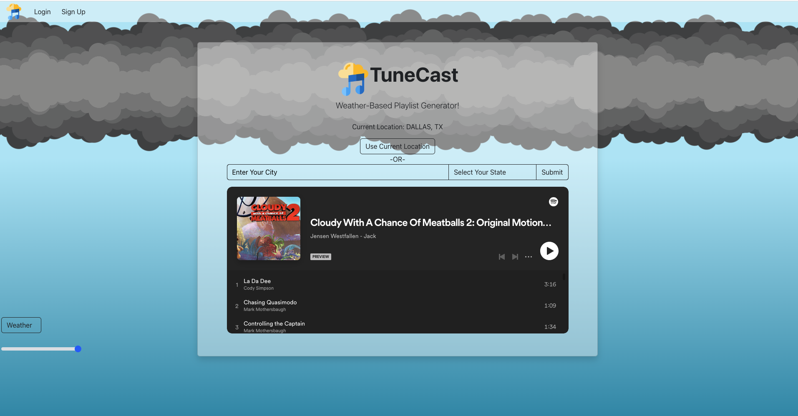
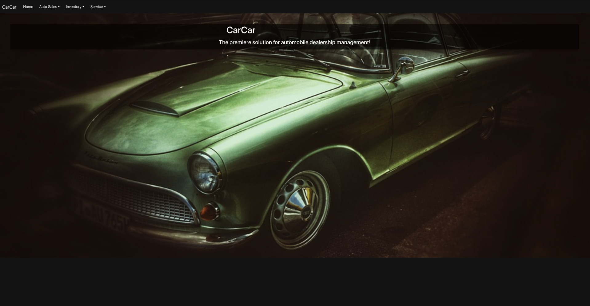
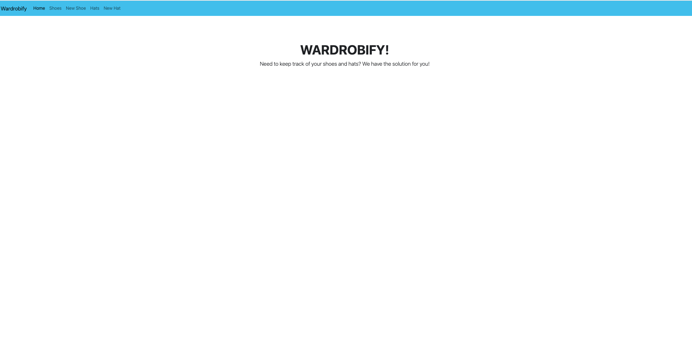
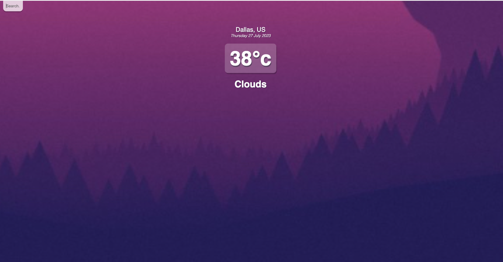

I am an accomplished full-stack software engineer with a passion for leveraging creativity, persistence, and collaborative efforts to tackle complex challenges. Equipped with a solid foundation gained from graduating with distinction from Hack Reactor's prestigious accelerated coding bootcamp, I am thrilled to embark on a journey of continuous learning and professional growth as a software engineer. My dedication to problem-solving and a deep appreciation for teamwork drive me to create innovative and impactful solutions for the ever-evolving world of technology.
 

Developed a weather-based playlist generator application using React, FastAPI, and MongoDB. The application seamlessly integrated with the Weather API to fetch real-time weather data for user locations, enabling personalized playlist recommendations. To ensure secure user access, I implemented authentication endpoints and efficiently managed the database using MongoDB. The frontend was designed to be responsive and user-friendly, employing React and Bootstrap. Moreover, the frontend featured an embedded Spotify player that dynamically adjusted playlists based on current weather conditions, enhancing the overall user experience.

Created a comprehensive single-page application for an automobile dealership management system, employing React for the frontend and Django for the backend. The system encompassed various functionalities, and I constructed REST API endpoints in Django to cater to sales, inventory, and maintenance microservices. To ensure smooth data handling and seamless UI updates, I skillfully implemented state management in the frontend using React hooks. This resulted in an efficient and user-friendly application, streamlining the management processes for the automobile dealership.

Wardrobify is a purpose-built application that provides valuable assistance to individuals with expansive and diverse wardrobes, enabling them to efficiently organize their hats and shoes. To bring this concept to life, I meticulously crafted Wardrobify by laying the foundation with RESTful APIs implemented within microservices. These microservices were then seamlessly integrated to optimize performance and enhance user experience. Additionally, I skillfully developed a user-friendly React front-end, allowing seamless interaction with the RESTful APIs, further empowering users to effortlessly manage their wardrobe items. Wardrobify stands as a testament to the power of technology in streamlining wardrobe organization and simplifying daily routines for fashion-conscious individuals.

Developed a small weather app using React JS, which utilizes OpenWeatherMap's API to fetch and display the current temperature at a specific location. To achieve this, I integrated the Modern Javascript Fetch API along with React hooks and conditionals to efficiently retrieve and present the weather data to users. The app provides real-time weather information, making it a user-friendly and convenient tool for checking the current weather conditions at any desired location.